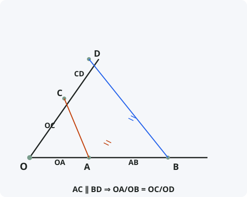

Теорема Фалеса
Формулировка
Если на одной из сторон угла отложить равные отрезки и через их концы провести параллельные прямые, пересекающие другую сторону угла, то на другой стороне также отложатся равные отрезки.
В общем виде: параллельные прямые, пересекающие стороны угла, отсекают на них пропорциональные отрезки.
Обозначения
Пусть дан угол с вершиной O. На одной стороне отложены точки A и B, на другой — C и D.
AC ∥ BD — прямые параллельны.
Тогда: OA/OB = OC/OD
Также верны пропорции: OA/AB = OC/CD и OB/AB = OD/CD

Доказательство
Теорема доказана.
Следствия из теоремы
- Обобщённая теорема Фалеса: параллельные прямые, пересекающие стороны угла, отсекают пропорциональные отрезки на обеих сторонах.
- Средняя линия треугольника параллельна третьей стороне и равна её половине.
- Средняя линия трапеции параллельна основаниям и равна их полусумме.
- Теорема Фалеса лежит в основе доказательства признаков подобия треугольников.
- С помощью теоремы Фалеса можно делить отрезок на любое число равных частей.
Примеры применения
Пример 1. На сторонах угла O отложены точки A, B и C, D так, что OA = 3, OB = 5, OC = 4,5. Найдите OD, если AC ∥ BD.
Решение: По теореме Фалеса: OA/OB = OC/OD ⇒ 3/5 = 4,5/OD ⇒ OD = 5·4,5/3 = 7,5.
Пример 2. Разделите отрезок AB длиной 10 см на 3 равные части с помощью циркуля и линейки.
Решение: Проводим луч из A под острым углом. Откладываем на нём 3 равных отрезка. Соединяем конец последнего с B и проводим параллельные прямые через точки деления. По теореме Фалеса AB разделится на 3 равные части.
Пример 3. В треугольнике ABC проведена средняя линия MN. Докажите, что MN ∥ BC и MN = BC/2.
Решение: По теореме Фалеса из AM = MB следует AN = NC. По обратной теореме Фалеса MN ∥ BC. Из подобия треугольников MN = BC/2.
Историческая справка
Теорема названа в честь древнегреческого математика и философа Фалеса Милетского (около 624–546 гг. до н.э.), одного из «семи мудрецов» Древней Греции.
Согласно легенде, Фалес использовал эту теорему для измерения высоты египетских пирамид. Он дождался момента, когда длина его тени стала равна его росту, и измерил длину тени пирамиды.
Теорема Фалеса — одна из первых геометрических теорем, доказанных в истории математики. Она положила начало учению о подобии фигур.
Интересные факты
- Фалес Милетский считается первым математиком, который начал доказывать геометрические утверждения, а не просто формулировать их.
- Теорема Фалеса работает не только для угла, но и для любых двух пересекающихся прямых.
- В некоторых странах теоремой Фалеса называют утверждение о том, что угол, опирающийся на диаметр окружности, — прямой.
- Теорема Фалеса лежит в основе работы делительной головки — устройства для точного деления окружностей в машиностроении.
- С помощью теоремы Фалеса можно построить четвёртый пропорциональный отрезок к трём данным.